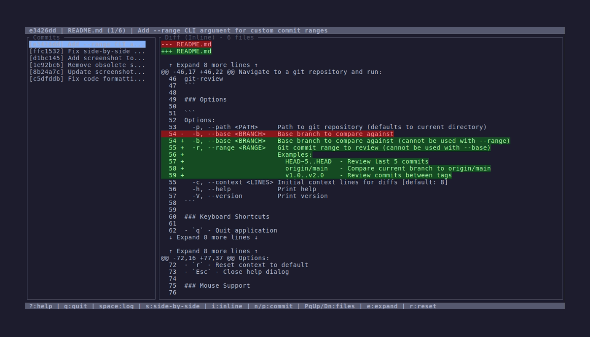
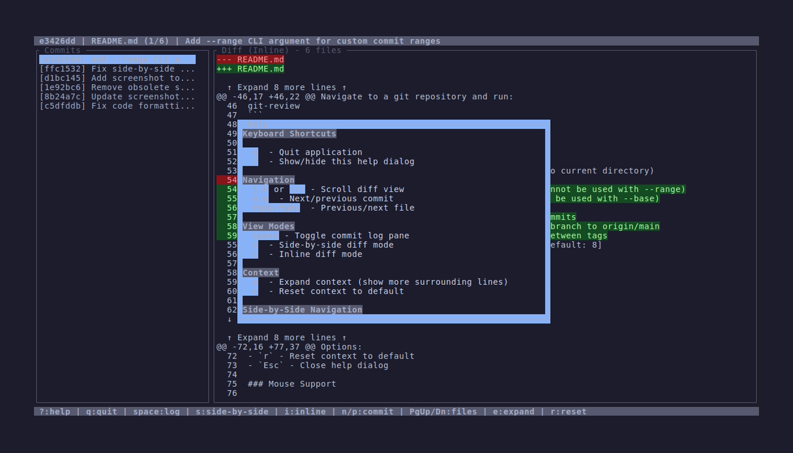

Overview
git-review is a powerful terminal-based code review tool that provides a GitHub-inspired diff interface optimized for reviewing git branch changes before pushing to a pull request. It works seamlessly on screens from 80x24 to 200x50+ and supports both side-by-side and inline diff modes.
Features
üé® GitHub-Inspired Interface
Familiar color scheme and layout with intuitive navigation. Side-by-side diffs with proper alignment and horizontal scrolling for long lines.
üì± Responsive Layout
Adapts to your terminal size automatically. Works on small screens (80x24) up to large displays (200x50+).
⌨️ Keyboard-First
Efficient keyboard shortcuts for all operations. Vim-style navigation (j/k) with arrow key support.
üñ±Ô∏è Mouse Support
Click to select commits, scroll with mouse wheel. Full keyboard/mouse integration.
üîç Context Expansion
Expand context to see more surrounding lines. Reset to default view with a single keypress.
üìä Multiple View Modes
Switch between side-by-side and inline diff modes. Toggle commit log pane visibility.
Installation
From crates.io (Recommended)
cargo install git-reviewFrom source
git clone https://github.com/andrewleech/git-review
cd git-review
cargo build --release
cargo install --path .Binary downloads
Pre-built binaries for Linux, macOS, and Windows are available from the GitHub Releases page.
Quick Start
Navigate to any git repository and run:
git-reviewBasic Usage
- Press
?to see all keyboard shortcuts - Use
j/kor↓/↑to scroll through diffs - Press
n/pto navigate between commits - Use
PgUp/PgDnto move between files - Press
spaceto toggle the commit log pane - Press
sfor side-by-side mode,ifor inline mode - Press
qto quit
Advanced Features
- Horizontal scrolling: In side-by-side mode, use
h/lor←/→to view long lines - Context expansion: Press
eto expand context,rto reset - Mouse navigation: Scroll with mouse wheel, click commits to select
Screenshots
Side-by-Side Diff Mode

Inline Diff Mode
Help Dialog
Animated Demo